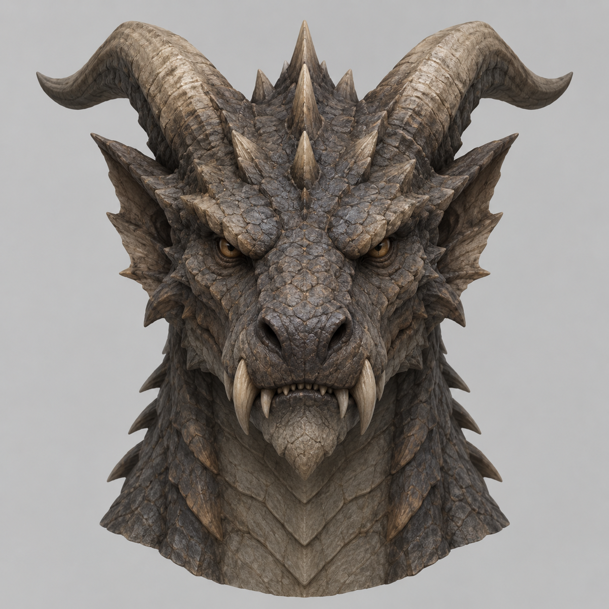

OPEN RESEARCH LIBRARY / 001
讓研究過程
看得見。
從原始資料、比較方法到報告修訂，留下每一步的依據。這裡收錄公開、可追溯的研究筆記與分析。
THE ARCHIVE
01 / 01研究報告

REPORT 001AI 3D視覺比較六類物件
三款 AI 3D 生成工具的
六類物件視覺比較
以相同類別的參考圖對照 Meshy、Tripo、混元 3D 的白模與貼圖成果，記錄可見差異與比較限制。
每份報告都保留來源與限制。
圖片可以顯示外觀差異，但無法單獨證明模型的拓樸、背面品質或製作效率。報告會把「看得到的觀察」與「尚未取得的資料」分開記錄。